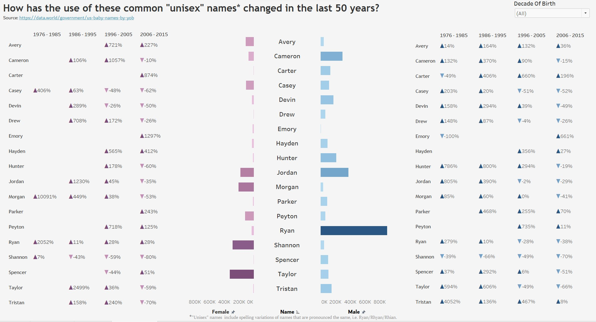
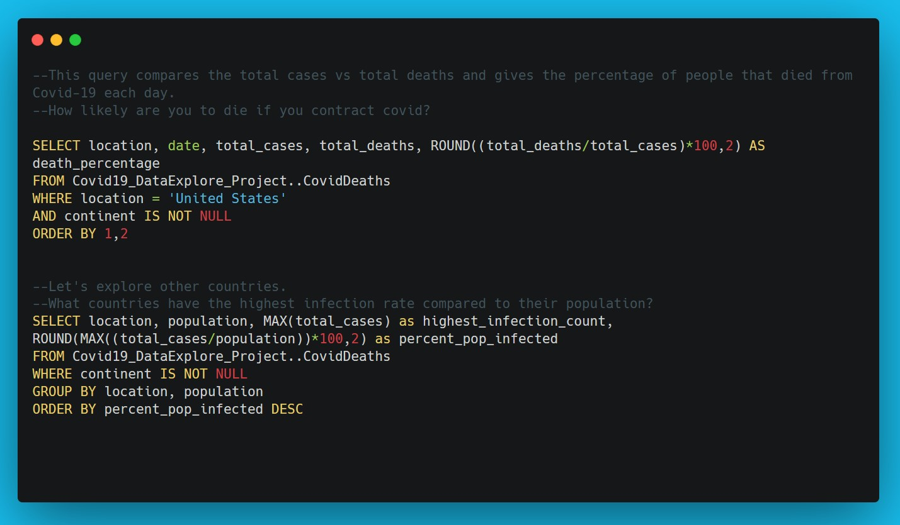

Superstore Sample Dataset Excel Dashboard Three part Excel dashboard for upper level management interested in sales, profit, and product details to help determine inventory needs and appropriate discounts. Download
Who's Name Is It Anyway?  Diverging bar chart visualization exploring the gender assignment of common unisex names over a 50 year span in the United States. View Project
Data Exploration & Analysis: COVID-19  Using aggregate functions and CTEs in MSSQL to analyze 2020 through current 2022 global COVID-19 data. View Project
Data Exploration & Analysis: International Debt Statistics Using SQL aggregate functions and grouping to answer questions about international debt provided by the World Bank via DataCamp. View Project